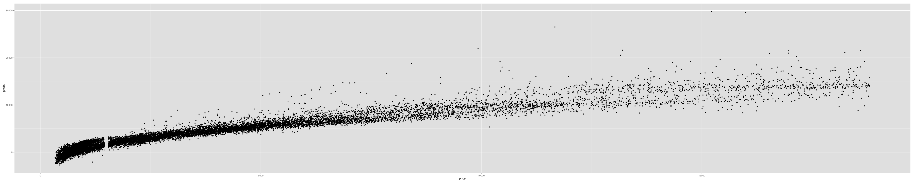

What: Web based App that allows users reliable diamond pricing
Why:
- Rediculously easy to use Interface
- Web based. Easy to update and deploy
- Built with Shiny. Enough said.
Paul Schiavone
library(ggplot2)
names(diamonds)
## [1] "carat" "cut" "color" "clarity" "depth" "table" "price"
## [8] "x" "y" "z"
# reduce the variables to the 4 c's and price
dia.small <- select(diamonds, -c(x:z, depth, table))
dia.small$cut <- as.integer(dia.small$cut)
dia.small$color <- as.integer(dia.small$color)
dia.small$clarity <- as.integer(dia.small$clarity)
qplot(x = carat, y = price, data = dia.small, color = cut, shape = clarity, size = color)

inTrain <- createDataPartition(y = dia.small$price, p = .70, list=FALSE)
dia.train <- dia.small[inTrain, ]
dia.test <- dia.small[-inTrain, ]
model.fit <- train(price ~ ., data = dia.train, method = "lm")
summary(model.fit$finalModel)
##
## Call:
## lm(formula = .outcome ~ ., data = dat)
##
## Residuals:
## Min 1Q Median 3Q Max
## -19799.6 -695.8 -167.4 556.8 9002.3
##
## Coefficients:
## Estimate Std. Error t value Pr(>|t|)
## (Intercept) -4669.648 33.031 -141.37 <2e-16 ***
## carat 8800.468 15.177 579.86 <2e-16 ***
## cut 159.007 5.815 27.35 <2e-16 ***
## color -327.108 3.942 -82.98 <2e-16 ***
## clarity 527.617 4.222 124.98 <2e-16 ***
## ---
## Signif. codes: 0 '***' 0.001 '**' 0.01 '*' 0.05 '.' 0.1 ' ' 1
##
## Residual standard error: 1235 on 37754 degrees of freedom
## Multiple R-squared: 0.9044, Adjusted R-squared: 0.9044
## F-statistic: 8.933e+04 on 4 and 37754 DF, p-value: < 2.2e-16
preds <- predict(model.fit, newdata = dia.test)
qplot(price, preds, data = dia.test)
